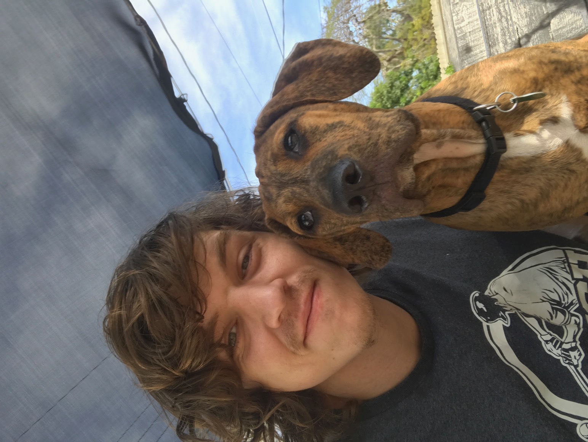

Dylan Ingram
Recent Software Engineering Graduate
- (239) 301-9990
- Ddingram5146@eagle.fgcu.edu
- https://dingram91.github.io/
- Bonita Springs, Florida

I am a recent graduate from Florida Gulf Coast University. I am very passionate about software development. I enjoy learning new skills and technology and am very grateful I have found a career path I enjoy so much. I enjoy working on large projects and being a part of a team. I am ready and eager to prove myself as a professional.
Work Experiences
Website Manager/Office Assistant
- Managing email and contacts.
- Built and manage website.
- Managing customer information acquisition, filing, and storage.
Delivery Puller
- Scheduled and prepared orders for delivery to customer’s homes using 3 rd party delivery companies.
- Primary point of contact between the store and customers using the online ordering system.
- Worked closely with the sales department and local contractors to meet client needs.
LTL Stocker
- Unloaded resupply trucks from the company supply warehouse and 3 rd party suppliers.
- Verified shipping manifests while keeping proper documentation.
- Filed disputed for inaccurate manifest paperwork and merchandise damaged in transit.
Cook
- Prepared food for customers.
- Cleaned and maintained kitchen equipment meeting both customer expectations as well as passing all Health Department standards.
- Took orders and delivered food to customers as needed.
Projects
Graphical Resort Booking Program
- Allowed users to create an account, login, edit and remove their account information. View available rooms, create new bookings and view and edit existing bookings.
- Built in java utilizing JavaFX for the GUI and H2 as the Relational Database.
Trash Pandas Recycling Game
- Online game aimed at increasing on-campus recycling.
- Users could scan bar codes of recyclables with their cell phone camera as well as bar codes on some recycling bins on campus to get points.
- Points could then be redeemed in an in-app shop that allowed customization of the user’s avatar.
Tower of Hanoi Solution Calculator
- I built a JavaFX application that demonstrates solutions to the “Tower of Hanoi” game for varying numbers of disks.